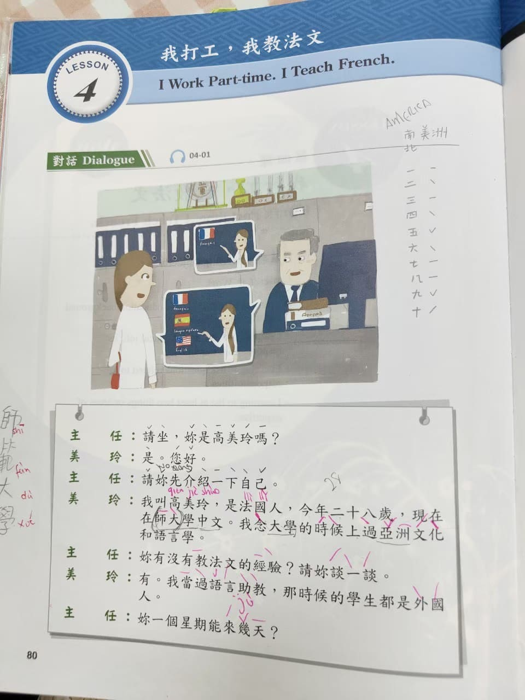
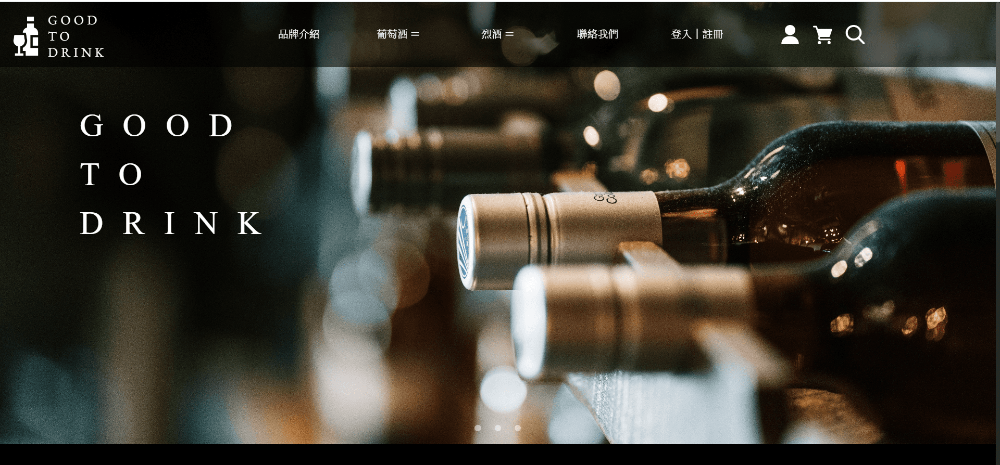
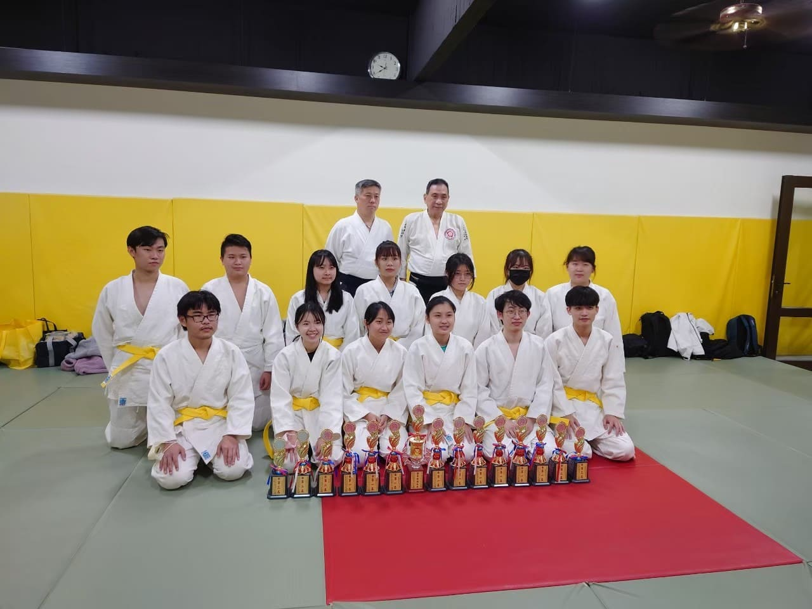
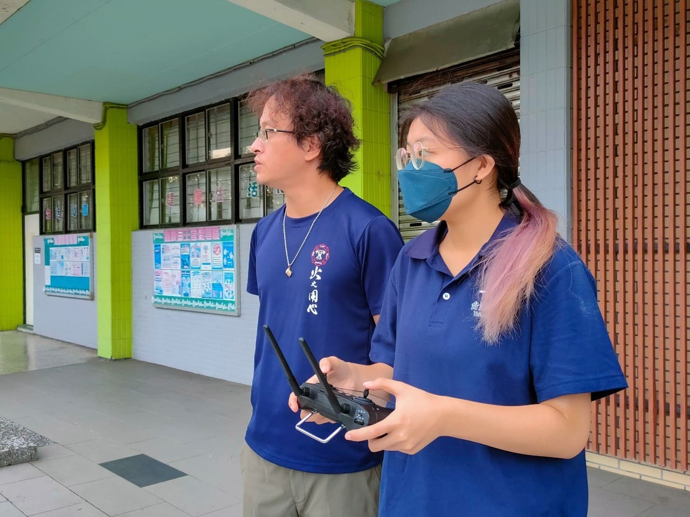

專業技能
前端網頁
後端網頁
資料庫
程式技能
Python
Java
CSS
課程
上學期上宗教哲學課時，我選擇了志工服務，主要內容是輔助在台的外籍人士學習中文，圖片是當時上課所使用的教材， 一開始我很擔心自己是否能做好這個工作，後來漸漸熟悉，我也放下心來，覺得這是一次不錯的經驗。
專案
上學期和甲班同學一起完成的期末專案，我們組當時所選擇的主題是酒，將酒的品項分為葡萄酒、烈酒等做出不同的網頁並將其連結。 配合資料庫的應用，讓網站能隨著使用者的使用而產生變化，像是瀏覽人數，商品庫存，以及留言等內容。
社團活動
大一時參加了合氣道，在社團待了一年，這是在第一次參加比賽回來後拍的照片，我覺得練習技法很好玩，和社團的大家也都相處得不錯， 不過上大二的暑假找到工作後，就沒有參加社團的精力了。
工作經驗
在台續工作時，第一次接觸無人機，現在我擔任假日班的課務，輔導學生上課，報名考無人機證照等相關事宜，以及行政上部分事務的處理， 近期最新的工作體驗是在5月，我們準備帶學員出海講解漁釣機的使用，也是我第一次接觸的經驗。